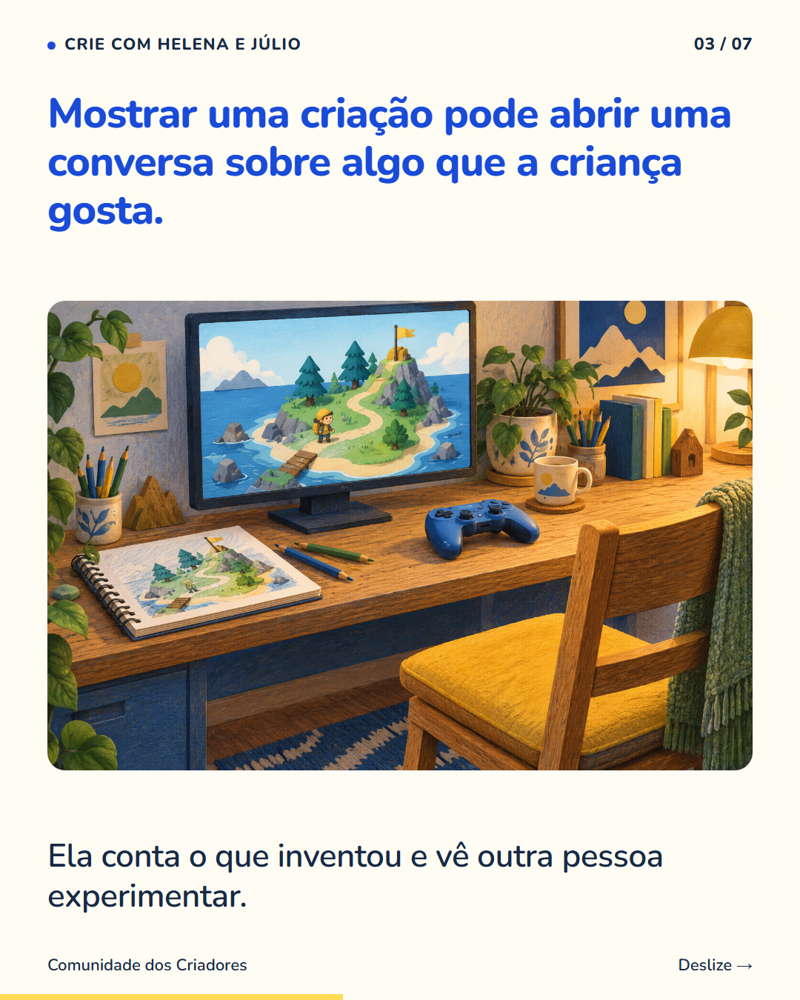
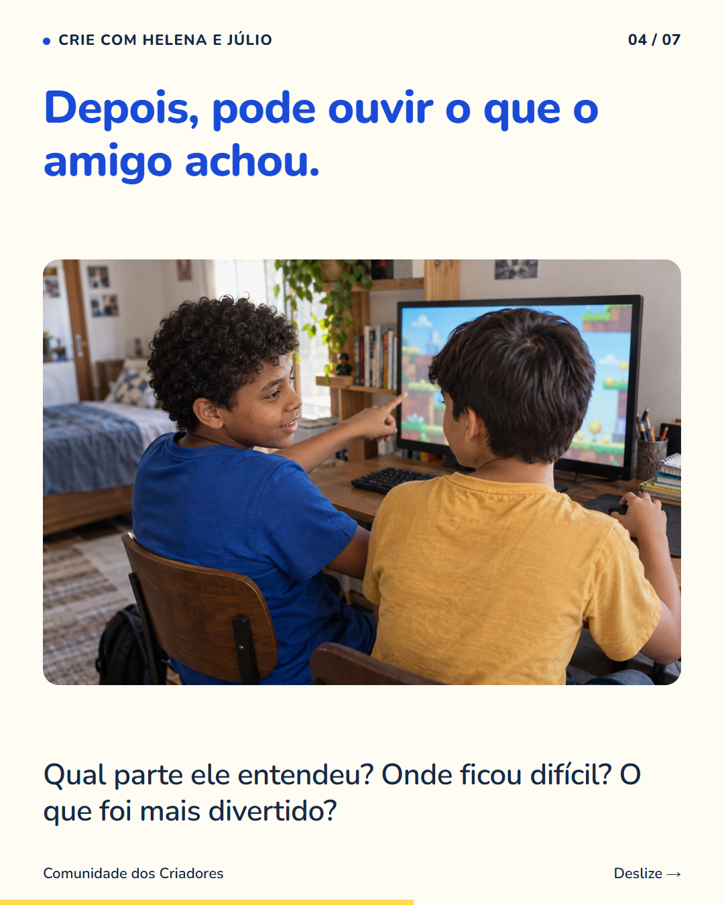
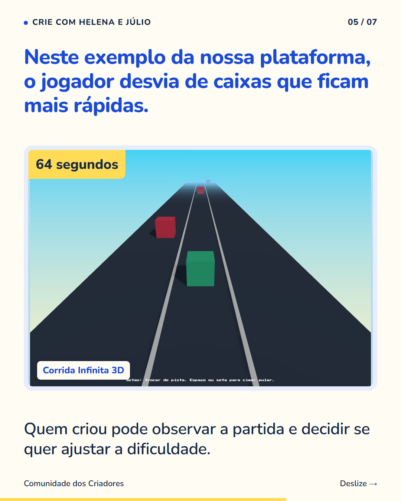

7 slides · 1080 × 1350 · Copy revisada · Compartilhar uma criação e conversar sobre ela



Rafael quis mostrar a um amigo o jogo que tinha criado. Ele contou: ‘No fim eu peguei o link e mandei pro meu amigo jogar.’ Compartilhar permitiu que outra pessoa experimentasse sua criação. Vocês também podem combinar para quem mostrar um projeto: alguém da família ou um amigo conhecido. Depois da partida, vale conversar sobre uma parte que chamou atenção. O criador pode ouvir a opinião e escolher o que quer manter ou mudar. Na Comunidade, o Mural dos Criadores também permite conhecer projetos e comentar, com moderação. Siga o perfil para ver outras experiências de crianças criando jogos.